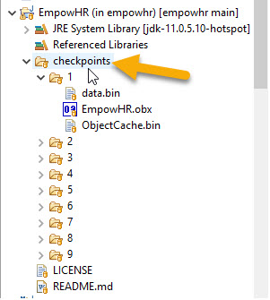

CheckPoints: throughout this tutorial, there will be checkpoints with a number. This can be used to get a copy of the Model (EmpowHR.obx), and the data files "data.bin" and "ObjectCache.bin".
Go to the EmpowHR project at https://github.com/ViaOA/empowhr, and go to the checkpoints directory.
From Eclipse:

Do the following if you would like to use them at that pointer. Substitute # with the check point subdirectory that is needed.
Note: some of the CheckPoints will only have a Model. You can use the previous checkpoint's data files.
CheckPoint #1 was created, before starting this next section.
use the
instructions above to use the checkpoint files.